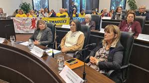
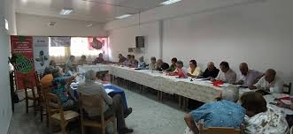

Actividades





Nuestra Institución fue fundada en 1946 con el objetivo de brindar apoyo a los jubilados y pensionistas del Departamento de Durazno. A lo largo de los años, la institución ha consolidado su rol no solo como un referente en la defensa de los derechos de los adultos mayores, sino también como un espacio cultural y recreativo clave para la integración y el fortalecimiento del sentido de pertenencia de sus miembros.
Como organización de tipo sindical y gremial, la Asociación se dedica a una amplia gama de áreas de trabajo enfocadas en la inclusión social, la salud y el fomento de ideas culturales y tiempo libre.
En su labor diaria, se destacan actividades en las siguientes subáreas:
Personas adultas mayores: Promoviendo la integración, la participación activa y el bienestar de los adultos mayores en la sociedad.
Atención médica: Ofreciendo servicios de salud y bienestar a los asociados, garantizando un acceso adecuado a la atención médica.
Actividades recreativas: Desarrollando propuestas de recreación y esparcimiento, que contribuyen a la calidad de vida de los miembros de la Asociación.
Arte y Cultura popular: Impulsando actividades que fomentan la creatividad y la expresión cultural, promoviendo la participación en eventos culturales locales y regionales.
La Asociación de Jubilados y Pensionistas de Durazno se caracteriza por su compromiso con la mejora continua de la calidad de vida de los jubilados y pensionistas, así como por su labor en la construcción de una comunidad más inclusiva y culturalmente activa. Es un lugar de encuentro y apoyo, que ofrece a sus miembros un espacio de recreación, aprendizaje y compañerismo.